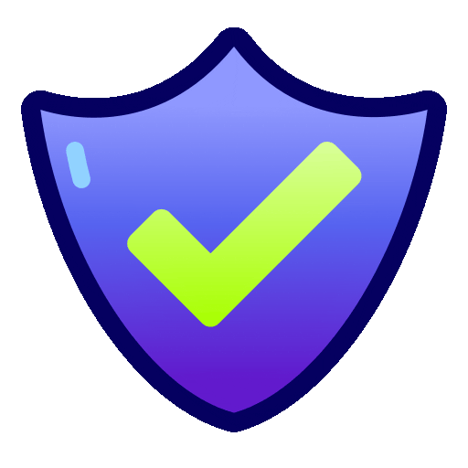
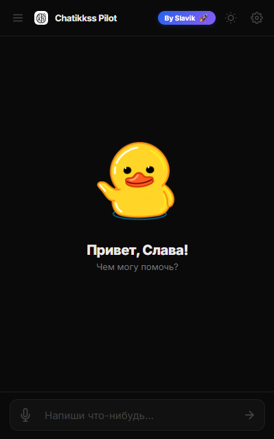

Сделано С ❤️ от Slavik
Твой десктоп
стал умнее.
Управляй системой голосом, общайся с Чатиккссом и автоматизируй рутину прямо с рабочего стола. Чистый код, открытый исходник и никакой магии!
Chatikkss
 Voice Control
Voice Control

Safe Actions